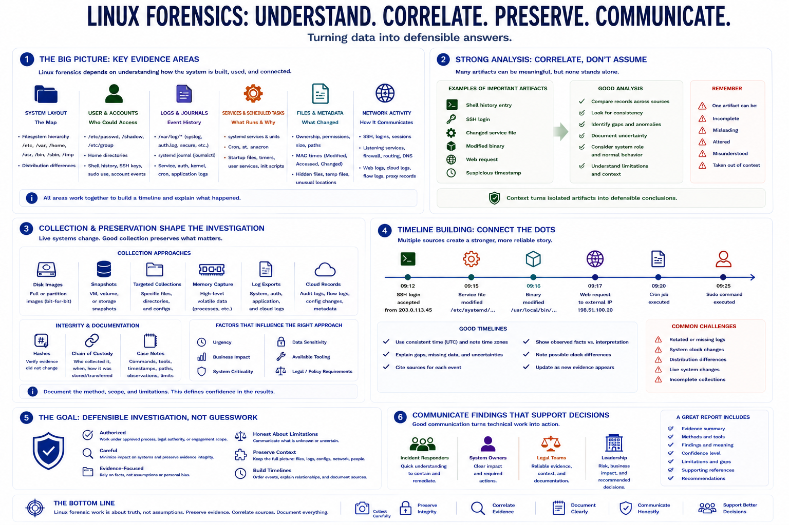

Course Summary and Key Takeaways
Connecting to LMS... Progress: in progress

Narration
Linux forensics depends on understanding system layout, user artifacts, logs, services, files, and network activity. The filesystem hierarchy gives analysts a map. User and account artifacts help identify who could access the system. Logs and journals provide event history. Services, scheduled tasks, and startup files help explain what runs and why. File metadata and network records add more pieces to the timeline.
Strong analysis preserves evidence and correlates sources. A shell history entry, SSH login, changed service file, modified binary, web request, or suspicious timestamp may be important, but each artifact needs context. Analysts should compare records, look for consistency, identify gaps, and document uncertainty. One artifact can be incomplete, misleading, altered, or misunderstood.
Collection and preservation shape the quality of the investigation. Live systems change as they are examined, and some evidence disappears quickly. Disk images, snapshots, targeted collections, memory captures, log exports, hashes, chain of custody records, and case notes all help make the work more defensible. The right approach depends on the incident and the system.
The goal is defensible investigation, not guessing from isolated artifacts. Linux forensic work should be authorized, careful, evidence-focused, and honest about limitations. When analysts preserve context, build timelines, and communicate findings clearly, they help incident responders, system owners, legal teams, and leadership make better decisions.